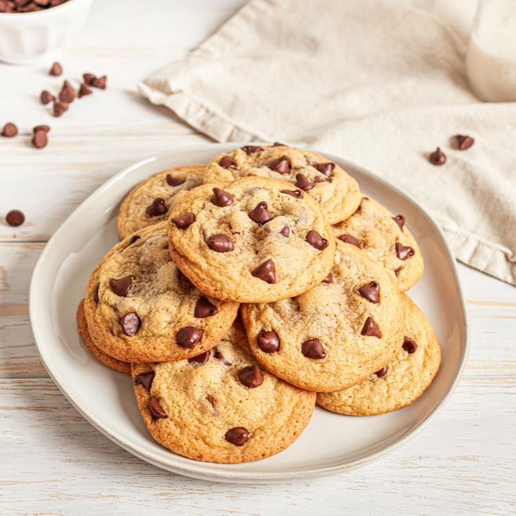

Cookies
Home

Learn how to make the chocolate chip cookie that started it all! Our original NESTLÉ® TOLL HOUSE® chocolate chip cookie recipe is perfect for all occasions!
Ingredients
- 2 1/4 cups all-purpose flour
- 1 teaspoon baking soda
- 1 teaspoon salt
- 1 cup (2 sticks) butter, softened
- 3/4 cup granulated sugar
- 3/4 cup packed brown sugar
- 1 teaspoon vanilla extract
- 2 large eggs
- 2 cups chocolate chips
Steps
- Preheat oven to 375° F.
- Combine flour, baking soda and salt in small bowl. Beat butter, granulated sugar, brown sugar and vanilla extract in large mixer bowl until creamy. Add eggs, one at a time, beating well after each addition. Gradually beat in flour mixture. Stir in morsels and nuts. Drop by rounded tablespoon onto ungreased baking sheets.
- Bake for 9 to 11 minutes or until golden brown. Cool on baking sheets for 2 minutes; remove to wire racks to cool completely.
- Prepare dough as above. Divide in half; wrap in waxed paper. Refrigerate for 1 hour or until firm. Shape each half into 15-inch log; wrap in wax paper. Refrigerate for 30 minutes.* Preheat oven to 375° F. Cut into 1/2-inch-thick slices; place on ungreased baking sheets. Bake for 8 to 10 minutes or until golden brown. Cool on baking sheets for 2 minutes; remove to wire racks to cool completely. Makes about 5 dozen cookies. * May be stored in refrigerator for up to 1 week or in freezer for up to 8 weeks.